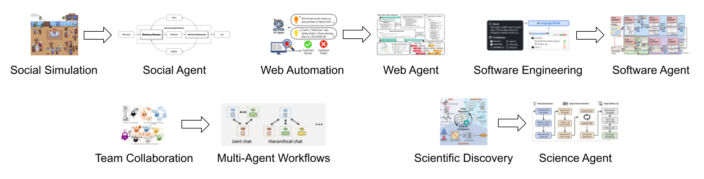

Update: SimuRA has won 2nd place in the Fundamental Track (2 of ~3,000 participants) at the Berkeley LLM Agents Hackathon! The work competed under the team name TARS: Team for Advanced Reasoning Systems.
TL;DR: We introduce SimuRA - a general architecture for optimal goal-oriented agent based on simulation with LLM-based world model, which reasons and plans across environments in the latent space of natural language. The web agent based on SimuRA, ReasonerAgent-Web, shows up to 124% improvement in browsing experiments, and is available on GitHub and as a research demo for public testing.
Overview
Despite the enormous promise of AI agents based on large language models (LLMs), current practice focuses on a one-task-one-agent approach, which not only falls short of scalability and generality, but also suffers from the fundamental limitations of autoregressive LLMs. On the other hand, humans are general agents who reason by mentally simulating the outcomes of their actions and plans. Moving towards a more general and powerful AI agent, we introduce SimuRA (Simulative Reasoning Architecture), a goal-oriented architecture for generalized agentic reasoning. Based on a principled formulation of optimal agent in any environment, SimuRA overcomes the limitations of autoregressive reasoning by introducing a world model for planning via simulation. The generalized world model is implemented using LLM, which can flexibly plan in a wide range of environments using the concept-rich latent space of natural language. Experiments on difficult web browsing tasks show that SimuRA improves the success of flight search from 0% to 32.2%. World model planning, in particular, shows consistent advantage of up to 124% over autoregressive planning, demonstrating the advantage of world model simulation as a reasoning paradigm. We are excited about the possibility for training a single, general agent model based on LLMs that can act superintelligently in all environments. To start, we publish ReasonerAgent-Web, a web-browsing agent built on SimuRA with pretrained LLMs, from Maitrix.org as a research demo for public testing.
Introduction
AI agents powered by large language models (LLMs) have the potential to make immense impact in a wide range of applications. Existing work, however, typically develops agent architectures and multi-agent workflows tailored to specific tasks (see below for examples, e.g., social agent is developed for social simulation, and web agent for web automation).
Figure 1: Current approaches typically develop specific agents and multi-agent workflows tailored to specific tasks.
Such a one-task-one-agent approach economically falls short of scalability, intellectually offers no clear path towards general intelligence, and technically is fundamentally constrained by autoregressive LLMs which struggle with recovering from previous mistakes.
On the other hand, humans are generalists with a single cognitive architecture, but can nevertheless achieve goals in diverse environments (left in the figure below). Furthermore, human reasoning is not limited to linear, autoregressive reasoning, but also forward-looking, simulation-based reasoning using an internal world model (right in the figure below).
Figure 2: Humans are general agents who can act in diverse environments; in particular, humans can adapt to novel situations through reasoning by simulating different courses of action mentally.
To bridge this gap, we present SimuRA, a generalized architecture for building goal-oriented agents, with each component implemented using LLM. In particular, we overcome the limitations of LLM autoregressive reasoning by introducing world model for planning via simulation. Because simulating the full details of the world is infeasible, we extract only the relevant information using natural language as a compact but complete representation, and simulate the next world in this latent space. SimuRA improves performance substantially in experiments on web browsing, increasing the success rate of flight search from 0% to 32.2%, with reasoning by world model simulation outperforming LLM autoregressive reasoning by up to 124%. We have made the resulting web agent available to the public as ReasonerAgent-Web, with more details described in a blogpost and the agent available for testing in a public demo.
SimuRA: Generalized Architecture for Optimal Goal-Oriented Agent
Formulation of Agent-Environment Model
We consider an agent with identity \(i\) (e.g., name, description, and goal \(g\)) acting in environment \(e\) (e.g., web browser), with action space \(\mathcal{A}\) and observation space \(\mathcal{O}\). At each time step \(t\):
- The agent interacts with the environment by taking action \(a_t \in \mathcal{A}\) following distribution \(\pi_i\).
- The environment returns the next observation \(o_t \in \mathcal{O}\) following distribution \(\mu_e\).
Due to its goal-oriented nature, the agent's priority is to maximize the probability of achieving its goal(s), which we denote as \(\beta(g) \leq 1\), given the history \(ao_{1:t}\). Specifically, we evaluate the agent's success by the expected goal-achieving probability over all possible future trajectories \(ao_{t:m}\), with the planning horizon \(m \rightarrow \infty\). Due to the conceptual similarity, we will use the term interchangeably with value function from reinforcement learning. We also present the recurrence satisfied by the value function, which is useful for defining optimal agents. We present the formula below:
Definition of Optimal Agent
The optimal agent with identity \(i\) for environment \(e\) is thus the agent \(\pi^*_{i,e}\) that maximizes the expected goal-achieving probability: \(\pi^*_{i,e} := \argmax_{\pi} V^{\pi, \mu_e}_g\). Specifically, given interaction history \(ao_{<t}\), the optimal agent will always choose the action \(a^*_t\) that maximizes the value function. Assuming the agent chooses from actions sampled from a proposal distribution \(\tilde{\pi}_{i,e}\) and omitting the index of \((\pi, \mu)\) for the value function, we can formalize the decision-making process as below:
Design of General Agent Architecture
In this subsection, we describe in detail our proposed implementation of the optimal agent model for general applicability and robust decision-making across environments. The components and workflow of the architecture are illustrated in Figure 3 below, followed by discussions of the key design choices.
Figure 3: Illustration of the General Agent Architecture Design.
- Approximate Environment Dynamics with World Model: In practice, the agent often has no access to the environment dynamic \(\mu\). Furthermore, basing planning on each individual environment offers no way towards a general agent. Therefore, we learn a ML model \(\hat{\mu}(o_t | ao_{<t}, a_t)\) to approximate the environment dynamics, a.k.a., a world model. The core challenge is thus to build a general world model that can be applied to diverse environments.
- General Next-World Prediction in Latent Space Using LLM: Learning to predict the next raw observation \(o_t\) generally, however, is not only practically challenging but also theoretically intractable. To address this challenge, we propose to instead predict the agent's belief state \(x_t\) in using a world model over an abstract latent space \(\xi(x_t | ax_{<t}, a_t)\). Combined with an encoder \(\sigma(x_{<t} | ao_{<t})\) to translate past observations into their respective belief states, all the other modules may operate on this more structured latent space, which reduces hallucination and enables more robust reasoning in practice.
- Simplified Long-Horizon Decisions via Hierarchical Planning: Long-horizon planning is challenging due to the exponentially expanding search space and inevitable error accumulations as the agent simulates many decision steps into the future. To mitigate these issues, we introduce hierarchical planning over plans \(z_t\) which represents actions over multiple steps. The optimized plans are then translated into actions using an actor \(\nu_i(a_t | ao_{<t}, zs_{<t}, z_t)\). By optimizing over higher-level plans instead of low-level actions \(a_t\), we trade off action granularity for shorter planning horizon, which is more efficient and less error-prone in practice.
Implementation Using LLMs
We implement each component in the architecture using LLM due to its versatility. In particular, we adopt model-generated natural language as the latent space due to its flexibility, compositionality, hierarchical structure, and richness in concepts. During experiments, we observe that agent reasoning based on our proposed latent space tends to result in fewer hallucinations (e.g., assuming an action is successful even though it failed), and plan to compare more rigorously going forward.
We are working on a technical report which will discuss the design choices and describe implementations in more detail. Stay tuned!
Experiments
The SimuRA architecture is generally applicable to various environments and tasks. As our first step, we evaluate our implementation on web browsing as an example due to both its practical value and its technical challenge. Specifically, we evaluate the resulting agent named ReasonerAgent-Web on complex website navigation (e.g., search for flights), multi-hop, multi-website QA (e.g., research 5 different US Presidents), and general web automation (e.g., shop for a lawn mower). Across all 3 categories of tasks, ReasonerAgent-Web shows a clear advantage over the baselines, specifically increase the success rate on complex website navigation from 0% to 32.2%. Our proposed world model reasoning for planning also consistently improves over simple planning with autoregressive LLMs by up to 124%.
Figure 4: Overview of performance comparison between AgentModel and baselines.
We describe further evaluation details in the blog post for ReasonerAgent-Web and will present more in the upcoming technical report.
Limitations and Next Steps
While SimuRA is a general architecture, our current implementation is still based on prompting pretrained LMs, which benefits from crafting prompts for each environment. The pretrained models may not have knowledge of certain environment dynamics, leading to occasional inaccuracies. To address these issues, we plan to develop training strategies for the base LLM to perform optimally in a wide range of environments. Whereas our experiments currently focus on web browsing in the digital world, we aim to extend our implementation to more complex worlds such as physical environments and multi-agent interactions.
Conclusion
We have presented SimuRA, a general goal-oriented architecture for optimal agent decision-making. Empowered by simulation-based planning using world model and modeling of agent mental activities using natural language as latent representation, we see significant and strong improvements on a range of tasks in web browsing, with world model-based planning showing improved reasoning capacity compared to LLM autoregressive reasoning.
We are very excited about the possibilities for a single, general, superintelligent agent, but are also keenly aware of the risks for individuals and societies. On the capability side, we are working towards training a general agent model in environments such as physical world and multi-agent interactions. On the safety and alignment side, we look forward to engaging the community in discussions about how to ensure such an agent stays aligned with our shared values, priorities, and welfare.
Acknowledgment
We would like to thank Li Erran Li from AWS for the insightful comments and feedback. Mingkai Deng is supported by Samsung GRO Project “Efficient Designs for Generative and Agent LLM Development”. Any opinions, findings, and conclusions or recommendations expressed in this material are those of the authors and do not necessarily reflect the views of Samsung.
Team
This is a joint effort with collaborators from CMU, UC San Diego, MBZUAI, LLM360, Samsung, and All Hands AI.
Leads
Mingkai Deng, Jinyu Hou
Supervisors
Zhiting Hu, Graham Neubig, Hongxia Jin, Yilin Shen
Core Advisor
Eric P. Xing
Correspondence to Mingkai Deng, Jinyu Hou, and Eric P. Xing
Resources on ReasonerAgent-Web
Citation
For attribution in academic contexts, please cite this work as: